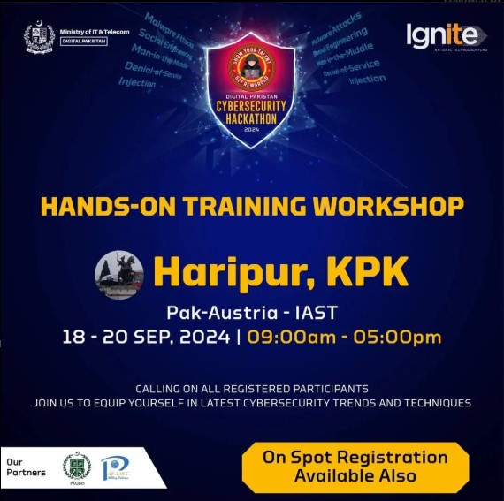

Society Objectives
- Enhance Cyber Awareness
- Skill Development
- Community Engagement
Society Details
Join us to enhance your artistic skills, participate in fun activities, and showcase your skills!
Cabinet Members
- Dr. Babar Nazir - Faculty Advisor
- Jarrar Abdullah Bin Qasim - President
- Noor e Eman Fatima - Vice President
- Raja Siraj Gul - General Secratary
- Mushaf Saleem - Director Management
Benefits of Membership:
- Learn Cutting-Edge Cybersecurity Techniques
- Educational Workshops
- Collaborative Projects
- Awareness Campaigns
How to Join:
Click the button below to fill the form and be a part of our team.
Join NowMedia Gallery

Contact Us
Follow us on social media or reach out to us through outlook